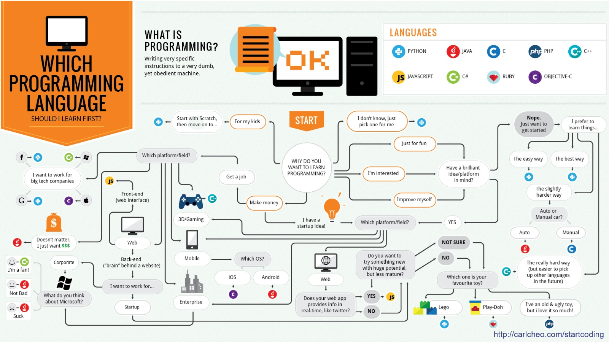
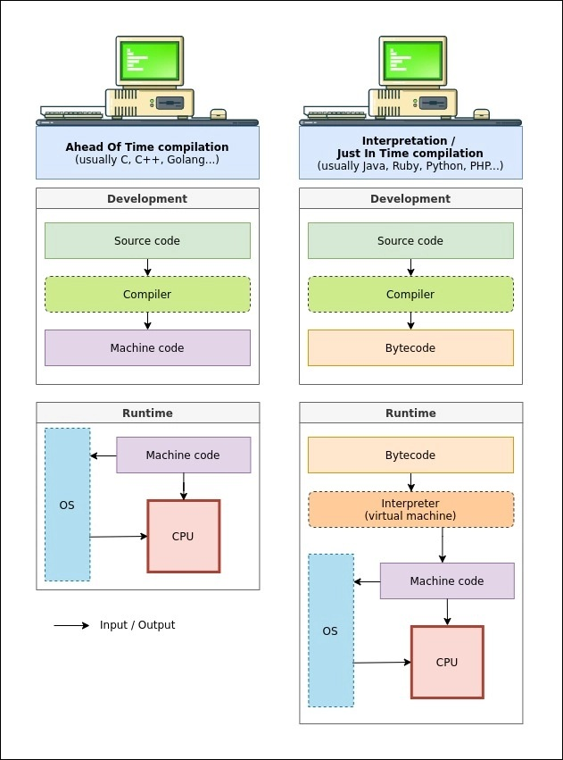

Lenguajes de Programación
Índice
- Introducción a los lenguajes de programación
- Niveles de Abstracción
- Paradigmas y Panorama Actual
- Compiladores (El modelo C/C++)
- Intérpretes y Máquinas Virtuales
- Compiladores frente a Intérpretes
- Ecosistema de Desarrollo (IDEs)
- Ética y Responsabilidad en la Era de la IA
1. Introducción a los lenguajes de programación
Concepto Básico
Los programadores escriben programas utilizando lenguajes de programación para que el ordenador ejecute una serie de instrucciones. Estos programas legibles por humanos se denominan código fuente.
Por otro lado, el ordenador (el hardware) trabaja internamente usando exclusivamente código binario (secuencias de 0s y 1s que representan estados físicos de voltaje), un formato que resulta ininteligible a primera vista para las personas. El código binario ejecutable de un programa se denomina código objeto o código máquina.
Por tanto, se deduce la necesidad de utilizar programas traductores que conviertan el código fuente (alto nivel de abstracción) a código máquina (bajo nivel de abstracción).
Definición y Componentes
Un Lenguaje de Programación es un conjunto de símbolos y reglas con los que expresar órdenes a un ordenador.
- Léxico: El conjunto de símbolos (palabras, signos de puntuación) que acepta el lenguaje.
- Sintaxis: Reglas que establecen qué construcciones son aceptables como instrucciones válidas (la gramática).
- Semántica: Reglas que establecen el significado o comportamiento de dichas instrucciones.
Diferencia clave entre Sintaxis y Semántica:
- Ejemplo en lenguaje natural: La frase "La silla come manzanas" es sintácticamente correcta (Sujeto + Verbo + Predicado), pero semánticamente incorrecta (carece de sentido lógico).
- Ejemplo en programación (Python): La instrucción
resultado = "Hola" / 2es sintácticamente correcta (estructura válida: variable = valor / valor), pero semánticamente errónea (no tiene sentido lógico ni matemático dividir un texto ("Hola") entre un número (2).
Comparativa: Lenguaje Natural vs. Programación
| Característica | Lenguaje Natural (Humano) | Lenguaje de Programación |
|---|---|---|
| Léxico | Palabras y signos de puntuación. | Símbolos reservados del lenguaje (palabras clave, operadores). |
| Sintaxis | Oraciones gramaticalmente correctas. | Instrucciones bien formadas y válidas. |
| Semántica | Información o mensaje que transmite quien habla. | Qué acciones exactas debe ejecutar el hardware. |
| Ambigüedad | Alta (depende del contexto). | Nula (una instrucción debe tener una única interpretación). |
2. Niveles de Abstracción
El concepto de abstracción en informática se refiere a la capacidad de ocultar la complejidad interna del hardware para facilitar la programación. Cuanto mayor es el nivel de abstracción de un lenguaje, más nos alejamos de los detalles físicos de la máquina (transistores, registros, direcciones de memoria) para centrarnos en la lógica del problema a resolver (fórmulas, objetos, datos).
Básicamente se pueden establecer tres niveles de abstracción:
- Lenguaje máquina (Bajo nivel)
- Lenguaje ensamblador (Bajo nivel)
- Lenguajes de Alto nivel
Lenguaje Máquina
Es el lenguaje directamente comprensible por el procesador (CPU). En el tema de Arquitectura estudiaremos cómo la CPU procesa estas órdenes; por ahora basta entender que es el componente hardware encargado de leer secuencialmente unos y ceros y actuar en consecuencia (sumar, guardar datos, etc.).
-
Utiliza un sistema de codificación binaria (secuencias de 1's y 0's) para definir un conjunto predefinido de instrucciones, (ISA, Instruction Set Architecture).
Definición de instrucción
Una instrucción es la operación más elemental que el hardware puede realizar indivisiblemente, como sumar dos valores, mover un dato de memoria al procesador, etc.
-
Depende totalmente de la arquitectura: un código máquina para una CPU ARM (móvil) es incomprensible para una CPU Intel Core i7 (PC).
-
Gestión: A este nivel, el control de la memoria es manual y absoluto.
¿Qué es la memoria?
La memoria es el casillero gigante de celdas numeradas donde se almacenan los datos y el programa en ejecución. En código máquina no existen las variables con nombres (como
edad), sino que el programador a este nivel debe referirse a los datos por su dirección física (el número exacto de la celda, ej:0x0045A).
Lenguaje Ensamblador
Emplea palabras nemotécnicas (abreviaturas) para hacer referencia a las instrucciones del lenguaje de máquina, haciéndolo ligeramente más legible para el humano.
Ejemplo de traducción y estructura (Familia x86/IA-32):
| Lenguaje de máquina | Ensamblador |
|---|---|
10110000 01100001 |
MOV AL, 61h |
En este ejemplo, la instrucción binaria se compone de 3 partes que el hardware decodifica:
- Código de operación (5 primeros bits): La secuencia
10110ordena mover (MOV) un dato a un registro. > Nota: Un registro es una posición de memoria ultrarrápida situada dentro de la propia CPU. - Registro destino (3 siguientes bits): El código
000corresponde al registro interno denominado AL. - Dato (8 bits finales): La secuencia
01100001es el valor del dato (97 en decimal, 61 en hexadecimal).
El lenguaje ensamblador permite escribir MOV AL, 61h en lugar de la cadena de bits, resultando mucho más inteligible.
Proceso de Traducción: El programa escrito en lenguaje ensamblador (Programa Fuente) debe ser traducido a lenguaje de máquina (Programa Objeto), ya que el procesador solo entiende 0s y 1s. Esta tarea la realiza una herramienta llamada Ensamblador.
[Programa Fuente] --> [Ensamblador] --> [Programa Objeto]
Características clave:
- Traducción directa: Generalmente existe una correspondencia 1 a 1 entre instrucción ensamblador y máquina.
- Dependencia: ¡Cada familia de CPU's tiene su propio lenguaje ensamblador!
Lenguajes de Alto Nivel
Estos lenguajes buscan acercarse a la forma de pensar humana y alejarse del detalle del hardware.
- Independencia y Portabilidad: Definen su sintaxis y sus estructuras al margen del procesador que se utilice. Un mismo código fuente puede ejecutarse en diferentes máquinas (es portable), siempre que se traduzca adecuadamente.
- Correspondencia Compleja (1 a N): A diferencia del ensamblador (1 a 1), una sola sentencia de alto nivel genera múltiples instrucciones de código máquina.
- Legibilidad y Edición: Se escriben como texto plano (usando palabras en inglés como
if,while) y permiten el uso de comentarios para explicar el código a otros humanos. - Necesidad de Traducción: Para poder ejecutarse, necesitan ser traducidos al lenguaje del procesador mediante Compiladores o Intérpretes.
- Tipado:
- Estático (C++, Java): El tipo de dato debe definirse explícitamente antes de compilar.
> Ejemplo:
int x = 3;(El programador obliga a quexsea un número entero). - Dinámico (Python, JS): El tipo se deduce automáticamente durante la ejecución.
> Ejemplo:
x = 3(Python infiere quexes un entero por el valor asignado, sin necesidad de declararlo).
- Estático (C++, Java): El tipo de dato debe definirse explícitamente antes de compilar.
> Ejemplo:
Ejemplo Comparativo: "Hola Mundo"
Para visualizar la diferencia de abstracción, veamos cómo se imprime un mensaje en pantalla en distintos niveles:
| Nivel | Código Ejemplo |
|---|---|
| Lenguaje Máquina | B8 21 0A 00 00 ... (Secuencia binaria/hexadecimal ininteligible) |
| Ensamblador (x86) | MOV EDX, lenMOV ECX, msgMOV EBX, 1MOV EAX, 4INT 0x80 |
| C++ (Alto Nivel) | std::cout << "Hola Mundo"; |
| Python (Muy Alto Nivel) | print("Hola Mundo") |
3. Paradigmas y Panorama Actual
Un paradigma de programación describe una forma de realizar los cálculos y la manera en que se deben estructurar y organizar las tareas que debe llevar a cabo un programa.
- Los lenguajes de programación suelen implementar, a menudo de forma parcial, varios paradigmas.
- Entre los diferentes tipos de paradigmas, una división básica es dividirlos en imperativos (se detalla cómo se realizan los cálculos) y declarativos (se indica qué cálculos deben realizarse).
- Otros paradigmas se centran en la estructura y organización: programación estructurada, modular, orientada a objetos, genérica, orientada a eventos, concurrente...
Nota
La mejor forma de entender un paradigma es aprender un lenguaje de programación que lo implemente, por lo que no entraremos en más detalles.

La jungla de los lenguajes
A menudo, el panorama actual se percibe como una jungla de lenguajes.
- Existen miles de lenguajes (se estima que hay más de 9.000 creados históricamente).
- Para un alumno novel, enfrentarse a esta imagen provoca la parálisis de la elección: ¿Por cuál empiezo? ¿Cuál es el *mejor?*
- La realidad: No todos tienen la misma importancia. Muchos son académicos, otros están obsoletos (como el latín) y otros son de nicho muy específico.
En esa jungla encontraréis herramientas para todo. Python es una navaja suiza (sirve para casi todo, fácil de llevar), C++ es un bisturí láser industrial (muy potente, pero si no sabes usarlo te cortas un brazo), y otros son simplemente juguetes.

Popularidad y Demanda (Rankings)
Dado el enorme número de lenguajes existentes, la industria se guía por índices de popularidad para decidir qué tecnologías adoptar. No existe un mejor lenguaje absoluto, pero sí tendencias de mercado claras. Dos de los indicadores más fiables son:
- Índice TIOBE: Se basa en el número de resultados en motores de búsqueda. Es un buen indicador de de qué se está hablando o qué se está buscando aprender.
- Ranking RedMonk: Cruza datos de GitHub (cantidad de código escrito) y Stack Overflow (cantidad de preguntas técnicas). Es un indicador más preciso de qué se está usando realmente en proyectos.
El declive de Stack Overflow y la era de la IA
Stack Overflow ha sido la página web de referencia absoluta para resolver dudas de programación durante más de una década. Sin embargo, su tráfico e interacción han sufrido una caída significativa con el advenimiento de asistentes de IA generativa (como ChatGPT o GitHub Copilot).
Al obtener respuestas inmediatas y código generado a medida por la IA, muchos desarrolladores ya no acuden a publicar sus dudas en la comunidad. Esto plantea la incógnita de si rankings como RedMonk, que dependen de estos datos, seguirán siendo fiables en el futuro cercano.


¿Por qué Python como primer lenguaje en Ingeniería?
Dado que nuestra asignatura se orienta a titulaciones de ingeniería (Biomédica, Electrónica, Mecánica, Química, etc.), la elección de Python como primer lenguaje no es arbitraria y se justifica por varios motivos técnicos y prácticos frente a opciones clásicas como C o C++:
-
Foco en la resolución del problema: En ingeniería, la programación es una herramienta para resolver problemas (filtrar una señal fisiológica, simular una estructura mecánica, analizar datos químicos), no un fin en sí mismo. La sintaxis de Python es limpia y legible (cercana al pseudocódigo), lo que reduce la carga cognitiva: el alumno dedica su esfuerzo mental a entender el algoritmo, no a pelear con llaves, puntos y comas o gestión de memoria manual.
-
El estándar en Ciencia de Datos e IA: Python posee el ecosistema de librerías científicas más robusto del mundo.
- Biomédica: Procesamiento de imágenes (OpenCV), señales médicas (SciPy, MNE).
- Mecánica/Química: Análisis de datos experimentales (Pandas), simulación numérica (NumPy).
- Electrónica: Control de instrumentos y automatización.
-
Productividad: Un programa en Python suele requerir entre 3 y 5 veces menos líneas de código que su equivalente en C++ o Java. Esto permite prototipar soluciones funcionales en mucho menos tiempo.
-
Multiparadigma: Permite empezar programando de forma imperativa (sencilla) y avanzar hacia la orientación a objetos o funcional progresivamente, sin imponer una estructura rígida desde la línea 1.

4. Compiladores (El modelo C/C++)
Un compilador es un programa que traduce todo el código fuente de una sola vez a un programa equivalente en otro lenguaje (normalmente código máquina) para su posterior ejecución.
Es importante destacar que los compiladores son algunas de las piezas de software más complejas y fascinantes de la informática. Su construcción requiere una altísima capacitación, ya que actúan como puente entre dos mundos: deben comprender la teoría matemática del lenguaje formal y, a la vez, explotar al máximo los recursos físicos del hardware.
El compilador detecta errores en tiempo de compilación (sintaxis), pero no errores en tiempo de ejecución (lógica).
Generación del Ejecutable (El proceso de Build)
- Edición: Se escribe el código fuente: las extensiones habituales de los archivos son
.cppy.h. - Preprocesamiento: Es una fase previa de preparación del texto. El preprocesador limpia el código eliminando las notas del autor (comentarios) e incrusta el contenido de ficheros externos necesarios (como si hiciera un copiar y pegar automático de las bibliotecas), dejando el código listo para traducir.
- Compilación: Traduce el código preprocesado a código objeto (
.oo.obj). Este código es binario pero aún no es ejecutable por sí mismo porque le faltan las conexiones con el resto del proyecto. > Un programa suele dividirse en muchos archivos fuente. En esta fase, cada archivo se traduce por separado, pero si uno necesita usar una función que está escrita en otro archivo, todavía no sabe dónde encontrarla. Esas referencias cruzadas están pendientes de resolver. - Enlazado (Linker): Une todos los archivos objeto del programador con las bibliotecas externas (ej. funciones matemáticas) para crear un único fichero ejecutable binario (
.exe).
¿Qué ocurre al ejecutarlo? (El Loader)
Cuando un usuario ejecuta ese archivo .exe, un componente del sistema operativo llamado cargador (loader) transfiere el código y los datos del fichero binario a la memoria RAM, y la CPU comienza a procesar las instrucciones en código máquina que contiene.

Fases de la Traducción (Interior del Compilador)
El compilador realiza la traducción típicamente en 2 grandes fases:
- Fase de Análisis (Front-end):
- Léxico: Verifica símbolos válidos.
- Sintáctico: Verifica la estructura gramatical.
- Semántico: Verifica la coherencia de tipos y significado.
- Fase de Síntesis (Back-end):
- Generación de código intermedio.
- Optimización: Fase crítica donde el compilador mejora el código (elimina código muerto, desenrolla bucles) para reducir tamaño o aumentar velocidad.
- Generación de código máquina específico para la arquitectura.
Tabla de Símbolos: Durante todo este proceso, el compilador mantiene una estructura de datos llamada Tabla de Símbolos. Esta actúa como una base de datos centralizada donde se registra información sobre cada identificador encontrado (variables, funciones, tipos), permitiendo verificar, por ejemplo, que no usemos una variable que no ha sido declarada previamente.

Importancia de la Arquitectura y Retrocompatibilidad
Dado que cada familia de CPU tiene un conjunto de instrucciones diferente (ISA), es necesario utilizar un compilador adaptado a esa arquitectura específica. Muchas firmas, como Intel, garantizan retrocompatibilidad: código escrito para sus CPU más antiguas (como la 8086 de los años 70) puede ejecutarse en sus chips modernos (arquitectura x86). Sin embargo, lo opuesto no es cierto: un ejecutable generado aprovechando las características de un chip moderno de 64 bits no funcionará en uno antiguo de 16 bits.
5. Intérpretes y Máquinas Virtuales
Intérprete Puro
A diferencia del compilador, que actúa como un traductor de libros (traduce la obra entera antes de entregarla), el intérprete actúa como un traductor simultáneo: lee una instrucción, la traduce y la ejecuta al vuelo.
Ejemplo ilustrativo (Pseudocódigo / Python): Imaginemos un programa con un error de sintaxis.
a = 10
b = 20
print(a, b)
c = a + / b # <--- ¡¡ERROR DE SINTAXIS!! (Sobran operadores)
print(c)
- Comportamiento Compilado: El proceso de traducción falla antes de empezar (Compilation Error). No se genera ningún archivo ejecutable y el usuario no ve nada en pantalla.
-
Comportamiento Interpretado: El programa arranca inmediatamente. El usuario ve por la consola los valores de
ayby, justo después, el programa se estrella (crash) al intentar ejecutar la cuarta línea. -
No genera un ejecutable independiente (como un
.exe). Necesitas tener el intérprete instalado en la máquina para correr el código. - Ventaja: Flexibilidad, depuración rápida, y capacidad de ejecutar código generado dinámicamente.
- Desventaja: Menor velocidad de ejecución: la CPU pierde tiempo traduciendo lo mismo una y otra vez.
Modelo Híbrido: Máquinas Virtuales
Muchos lenguajes actuales (Java, Python, C#) buscan un punto intermedio utilizando una estrategia de CPU Imaginaria.
-
Fase de Compilación a Bytecode: El código fuente no se traduce a la ISA de la CPU real (Intel, ARM, etc.), sino que se genera un fichero intermedio conteniendo Bytecode (ej.
.classen Java,.pycen Python). Este Bytecode no es más que la ISA (Instruction Set Architecture) de una máquina ideal que no existe físicamente. Es como traducir un libro de español a Esperanto en lugar de a 50 idiomas distintos. -
Fase de Ejecución (La Máquina Virtual): La Máquina Virtual (VM) no es hardware, sino un programa (software) instalado en el ordenador del usuario que actúa como ese procesador ficticio. De facto, la VM funciona como un intérprete puro (pero sobre el bytecode, no sobre el código fuente): lee las instrucciones del archivo intermedio y las traduce a la ISA nativa de la máquina real (Inglés, Francés, Chino...) en tiempo real. > Como ocurre con cualquier intérprete, si una instrucción de bytecode está dentro de un bucle, la VM la traducirá una y otra vez en cada iteración (salvo optimizaciones JIT), lo que implica una sobrecarga de rendimiento respecto al código nativo.
Ventajas de la Máquina Virtual:
- Portabilidad (WORA): Write Once, Run Anywhere. El mismo bytecode corre en Windows, Linux o Mac, siempre que exista la VM correspondiente. Nótese que, aunque el bytecode es universal, el software de la VM sí es específico para cada plataforma (por eso debes descargar una versión distinta de Java o Python si usas Windows, Mac o Linux), ya que es la pieza que lidia con el hardware real.
- Seguridad: La VM actúa como un entorno aislado (sandbox), protegiendo el hardware real.
- Gestión de Memoria (Limpieza automática): En lenguajes de bajo nivel (como C), la gestión de la memoria dinámica es manual. Si un programador solicita espacio extra durante la ejecución, es responsable de liberarlo explícitamente. Un simple olvido en este paso provoca fallos graves (fugas de memoria). Para evitarlo, la VM incluye un Recolector de Basura (Garbage Collector): un "servicio de limpieza" automático que detecta qué datos ya no sirven y los borra por ti.
Compilación JIT (Just-In-Time): Para mejorar el rendimiento, las VMs modernas (como la JVM de Java o V8 de JS) compilan trozos de bytecode a código nativo mientras el programa se ejecuta, combinando la velocidad de un compilado con la flexibilidad de un interpretado.
Ejemplos del Mundo Real:
- El Navegador Web: Es la máquina virtual que más usamos. Chrome o Firefox interpretan el código de las páginas web (JavaScript/WebAssembly) para que funcionen igual en tu PC, en un Mac o en tu móvil.
- Java vs Android: Mientras que en ordenadores se usa la JVM estándar, Android utiliza su propia máquina virtual llamada ART (Android Run Time). Aunque se programa en Java, el bytecode es diferente debido a temas de licencias y para optimizar el consumo de batería en móviles.
- .NET (C#): El entorno de Microsoft destaca por ser multilenguaje: compila alrededor de 35 lenguajes diferentes a un mismo bytecode llamado CIL (Common Intermediate Language). El lenguaje C# (C Sharp) es el más utilizado de este ecosistema y guarda muchas similitudes con Java y C++. Finalmente, un compilador JIT llamado CLR (Common Language Runtime) traduce y ejecuta ese código en la plataforma hardware definitiva.

6. Compiladores frente a Intérpretes
A continuación, comparamos los enfoques principales: Compilación Pura (C++), Interpretación Pura (versiones antiguas de BASIC, Scripts de Shell) y Enfoque Híbrido/VM (Java, Python).
| Característica | Compilador Nativo (C++) | Intérprete Puro | Máquina Virtual (Java/Python) |
|---|---|---|---|
| Proceso | Fuente \(\to\) Máquina (Ejecutable) | Fuente \(\to\) Ejecución directa | Fuente \(\to\) Bytecode \(\to\) VM |
| Cuándo se traduce | Antes de ejecutar (tiempo de compilación). | Durante la ejecución (tiempo real). | Mixto (pre-compilación a bytecode + JIT). |
| Rendimiento | Muy Alto. Optimizado para el hardware específico. | Bajo. Sobrecarga por traducción constante. | Medio/Alto. Gracias a tecnologías JIT. |
| Privacidad Código | Alta (se entrega binario difícil de leer). | Nula (se entrega código fuente visible). | Media (se entrega bytecode, que es reversible). |
| Portabilidad | Baja. Requiere recompilar para cada SO. | Alta. Solo requiere el intérprete instalado. | Muy Alta (WORA). Bytecode universal. |
| Detección Errores | Todos los de sintaxis reportados antes de correr. | El programa se detiene al encontrar el primer error. | Errores de sintaxis al generar bytecode; lógica en ejecución. |
Compiladores vs. Intérpretes vs. Máquinas Virtuales

7. Ecosistema de Desarrollo (IDEs)
Programar en un simple editor de texto (como el Bloc de Notas) es posible, pero ineficiente. Los profesionales usan IDEs (Integrated Development Environment), que combinan múltiples herramientas en una sola interfaz:
- Editor de código: Con resaltado de sintaxis y autocompletado automatizado.
- Compilador/Intérprete integrado: Para ejecutar el programa con un solo clic.
- Depurador (Debugger): Herramienta vital que permite detener la ejecución paso a paso para inspeccionar variables y encontrar errores lógicos.
- Gestión de proyectos: Organización de ficheros y control de versiones (Git).
Ejemplos populares: Visual Studio Code (ligero y multipropósito), Eclipse/IntelliJ (Java), Visual Studio (C++/C#), PyCharm (Python), Spyder (Python)
La forma en que programamos está en constante evolución:
- Asistentes de IA: Herramientas como GitHub Copilot generan código automáticamente a partir de descripciones en lenguaje natural, cambiando el rol del programador de escritor a supervisor.
- Low-Code / No-Code: Plataformas visuales para crear aplicaciones sin escribir código manual, democratizando el desarrollo.
- Computación Cuántica: Nuevos paradigmas y lenguajes (como Q# de Microsoft) diseñados para operar con qubits (bits cuánticos). Aunque su funcionamiento queda fuera del alcance de esta asignatura, esta tecnología promete resolver problemas hoy inabordables para la informática clásica.
8. Ética y Responsabilidad en la Era de la IA
El uso masivo de asistentes como ChatGPT o Copilot plantea importantes desafíos éticos y académicos:
- Integridad Académica (Cheating): En la universidad, presentar código generado por IA como propio sin comprenderlo se considera plagio y anula el proceso de aprendizaje. Una calculadora resuelve operaciones, pero no te enseña matemáticas; la IA escribe código, pero no te enseña a razonar la lógica (Vibecoding).
- Responsabilidad Profesional: Las IAs sufren alucinaciones (inventan código plausible pero incorrecto). En ingeniería (sanidad, automoción...), un fallo de software puede costar vidas. El ingeniero humano siempre será el responsable legal y moral de validar línea por línea lo que la máquina escribe.
- Dependencia: Para supervisar eficazmente a una IA, primero hay que ser un experto. Si delegas el aprendizaje básico, nunca tendrás criterio para corregir a tu asistente.